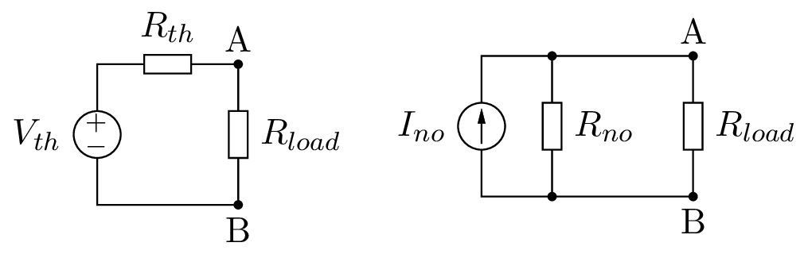

thévenin-norton-theorem.pythévenin-norton-theorem.py
####################################################################################################
#!# ============================
#!# Thévenin and Norton Theorem
#!# ============================
#!# The Thévenin's theorem holds that:
#!#
#!# * Any linear electrical network with voltage and current sources and only resistances can be
#!# replaced at terminals A-B by an equivalent voltage source Vth in series connection with an
#!# equivalent resistance Rth.
#!#
#!# * This equivalent voltage Vth is the voltage obtained at terminals A-B of the network with
#!# terminals A-B open circuited.
#!#
#!# * This equivalent resistance Rth is the resistance obtained at terminals A-B of the network
#!# with all its independent current sources open circuited and all its independent voltage
#!# sources short circuited.
#!#
#!# The Norton's theorem holds that:
#!#
#!# * Any linear electrical network with voltage and current sources and only resistances can be
#!# replaced at terminals A-B by an equivalent current source INO in parallel connection with an
#!# equivalent resistance Rno.
#!#
#!# * This equivalent current Ino is the current obtained at terminals A-B of the network with
#!# terminals A-B short circuited.
#!#
#!# * This equivalent resistance Rno is the resistance obtained at terminals A-B of the network
#!# with all its voltage sources short circuited and all its current sources open circuited.
#!#
#!# The Norton's theorem is the dual of the Thévenin's therorem and both are related by
#!# these equations:
#!#
#!# .. math::
#!#
#!# \begin{align}
#!# R_{no} & = R_{th} \\
#!# I_{no} & = V_{th} / R_{th} \\
#!# V_{th} & = I_{No} R_{no}
#!# \end{align}
#cm# thévenin-norton-theorem.m4
#!# In circuit theory terms, these theorems allows any one-port network to be reduced to a single
#!# voltage or current source and a single impedance.
#!#
#!# For AC circuits these theorems can be applied to reactive impedances as well as resistances.
#?# These theorems also applies to frequency domain AC circuits consisting of reactive and resistive
#?# impedances.
####################################################################################################
import PySpice.Logging.Logging as Logging
logger = Logging.setup_logging()
####################################################################################################
from PySpice.Spice.Netlist import Circuit
from PySpice.Unit.Units import *
####################################################################################################
thevenin_circuit = Circuit('Thévenin Representation')
thevenin_circuit.V('input', 1, thevenin_circuit.gnd, 10)
thevenin_circuit.R('generator', 1, 'load', 10)
thevenin_circuit.R('load', 'load', thevenin_circuit.gnd, kilo(1))
simulator = thevenin_circuit.simulator(temperature=25, nominal_temperature=25)
analysis = simulator.operating_point()
load_node = analysis.load
print('Node {}: {:5.2f} V'.format(str(load_node), float(load_node)))
#o#
norton_circuit = Circuit('Norton Representation')
norton_circuit.I('input', norton_circuit.gnd, 'load',
thevenin_circuit.Vinput.dc_value/thevenin_circuit.Rgenerator.resistance)
norton_circuit.R('generator', 'load', norton_circuit.gnd, thevenin_circuit.Rgenerator.resistance)
norton_circuit.R('load', 'load', norton_circuit.gnd, thevenin_circuit.Rload.resistance)
simulator = norton_circuit.simulator(temperature=25, nominal_temperature=25)
analysis = simulator.operating_point()
load_node = analysis.load
print('Node {}: {:5.2f} V'.format(str(load_node), float(load_node)))
#o#
####################################################################################################
#
# End
#
####################################################################################################
2.5.5.2.2. Thévenin and Norton Theorem¶
The Thévenin’s theorem holds that:
- Any linear electrical network with voltage and current sources and only resistances can be replaced at terminals A-B by an equivalent voltage source Vth in series connection with an equivalent resistance Rth.
- This equivalent voltage Vth is the voltage obtained at terminals A-B of the network with terminals A-B open circuited.
- This equivalent resistance Rth is the resistance obtained at terminals A-B of the network with all its independent current sources open circuited and all its independent voltage sources short circuited.
The Norton’s theorem holds that:
- Any linear electrical network with voltage and current sources and only resistances can be replaced at terminals A-B by an equivalent current source INO in parallel connection with an equivalent resistance Rno.
- This equivalent current Ino is the current obtained at terminals A-B of the network with terminals A-B short circuited.
- This equivalent resistance Rno is the resistance obtained at terminals A-B of the network with all its voltage sources short circuited and all its current sources open circuited.
The Norton’s theorem is the dual of the Thévenin’s therorem and both are related by these equations:
\[\begin{split}\begin{align} R_{no} & = R_{th} \\ I_{no} & = V_{th} / R_{th} \\ V_{th} & = I_{No} R_{no} \end{align}\end{split}\]
In circuit theory terms, these theorems allows any one-port network to be reduced to a single voltage or current source and a single impedance.
For AC circuits these theorems can be applied to reactive impedances as well as resistances.
import PySpice.Logging.Logging as Logging
logger = Logging.setup_logging()
from PySpice.Spice.Netlist import Circuit
from PySpice.Unit.Units import *
thevenin_circuit = Circuit('Thévenin Representation')
thevenin_circuit.V('input', 1, thevenin_circuit.gnd, 10)
thevenin_circuit.R('generator', 1, 'load', 10)
thevenin_circuit.R('load', 'load', thevenin_circuit.gnd, kilo(1))
simulator = thevenin_circuit.simulator(temperature=25, nominal_temperature=25)
analysis = simulator.operating_point()
load_node = analysis.load
print('Node {}: {:5.2f} V'.format(str(load_node), float(load_node)))
Node load [voltage]: 9.90 V
norton_circuit = Circuit('Norton Representation')
norton_circuit.I('input', norton_circuit.gnd, 'load',
thevenin_circuit.Vinput.dc_value/thevenin_circuit.Rgenerator.resistance)
norton_circuit.R('generator', 'load', norton_circuit.gnd, thevenin_circuit.Rgenerator.resistance)
norton_circuit.R('load', 'load', norton_circuit.gnd, thevenin_circuit.Rload.resistance)
simulator = norton_circuit.simulator(temperature=25, nominal_temperature=25)
analysis = simulator.operating_point()
load_node = analysis.load
print('Node {}: {:5.2f} V'.format(str(load_node), float(load_node)))
Node load [voltage]: 9.90 V